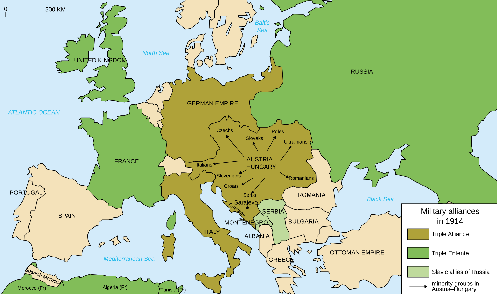
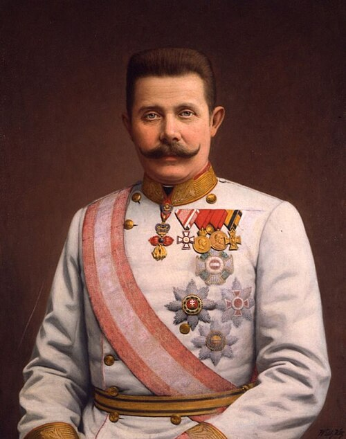
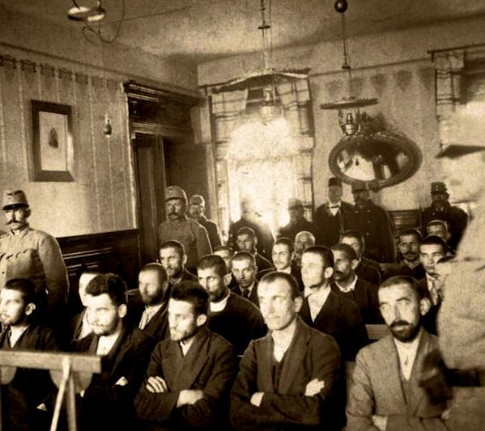
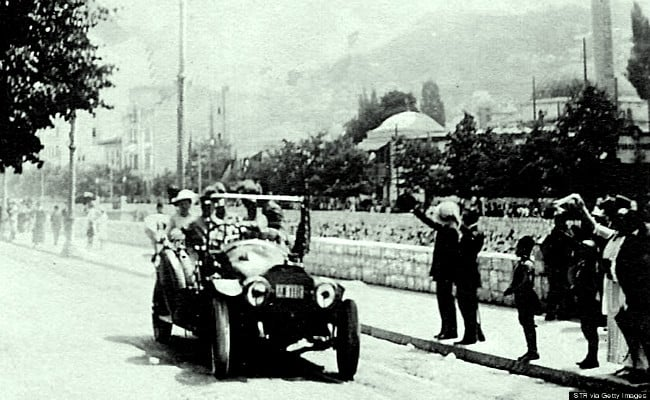
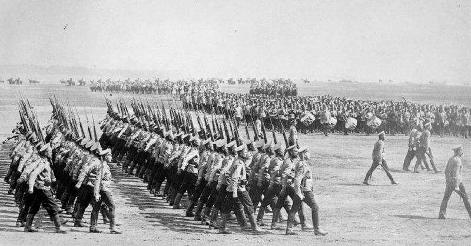
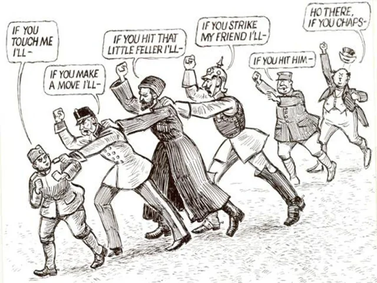
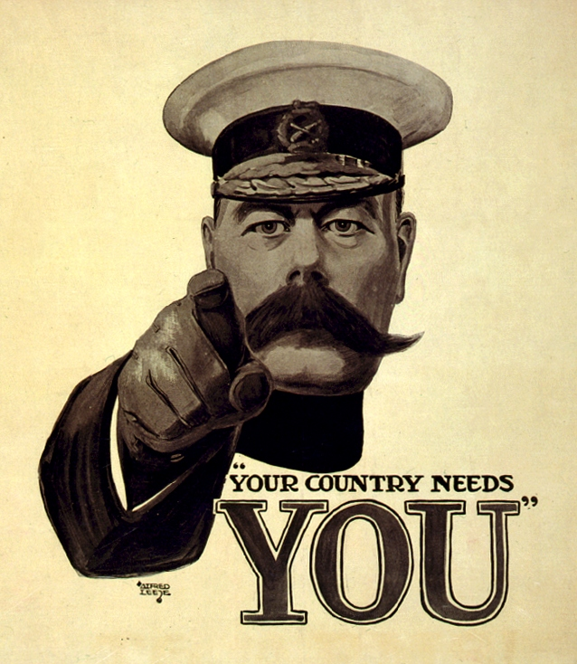

ESSENTIAL QUESTIONHow did rivalry, nationalism, and one assassination pull the entire world into war?
On June 28, 1914, a nineteen-year-old named Gavrilo PrincipThe young man who assassinated Franz Ferdinand. stood in a crowd in Sarajevo, Bosnia, holding a pistol. Earlier that morning, another attacker had failed to kill Archduke Franz FerdinandThe heir to the Austro-Hungarian throne.. Then the Archduke's car took a wrong turn and stopped almost directly in front of Princip.
On June 28, 1914, Gavrilo Princip stood in a crowd in Sarajevo with a pistol. He was nineteen years old. Earlier, another attacker had failed to kill Archduke Franz Ferdinand. Then the Archduke's car took a wrong turn and stopped right near Princip.
Princip fired twice. Within six weeks, Europe's most powerful nations were at war. Within four years, more than 20 million soldiers and civilians were dead. The big question is not only who fired the first shot. The bigger question is why Europe was so ready to explode.
Princip fired two shots. Six weeks later, many powerful countries were at war. Four years later, more than 20 million people were dead. The question is not only who started it. The bigger question is why Europe was so close to war already.
CHAPTER ONE
EUROPE WAS ALREADY A POWDER KEG
The assassination pulled the trigger, but the gun had been loaded for decades. Historians often use the acronym M.A.I.N.Militarism, alliances, imperialism, and nationalism. to explain the four long-term causes of World War I. Each one made war more likely. Together, they made one crisis feel impossible to stop.
The assassination started the crisis, but Europe had been tense for years. Historians use M.A.I.N. to explain four causes of World War I. These were militarism, alliances, imperialism, and nationalism. Each one made war more likely.
MILITARISM
MilitarismBuilding a powerful military and being ready to use it. meant armies and navies became symbols of national pride. Countries spent more money on weapons and soldiers.
ALLIANCES
An allianceAn agreement between countries to help each other. meant one country could pull its friends into war. A local conflict could become a continent-wide war.
IMPERIALISM
ImperialismWhen powerful countries control weaker places. made European countries compete for colonies, trade, and power around the world.
NATIONALISM
NationalismPride and loyalty to a nation. made people see compromise as weakness and war as honor.

Military alliances in Europe, 1914. The map shows how local conflict could spread quickly across borders. Wikimedia Commons.
These causes fed each other. Militarism made alliances seem necessary. Alliances made military buildups seem urgent. Imperial competition made countries distrust one another. Nationalism made every dispute feel like a test of honor. Europe in 1914 was not just tense; it was structured like a machine that could turn a small crisis into a global war.
These causes made each other worse. Militarism made alliances seem needed. Alliances made countries build bigger armies. Imperialism made countries distrust each other. Nationalism made each argument feel like a fight for honor. Europe was ready to explode.
DID YOU KNOW
HMS Dreadnought, launched in 1906.
One battleship changed the entire arms race. When Britain launched HMS Dreadnought in 1906, older battleships suddenly looked outdated. Germany rushed to build its own, and the race for bigger navies got louder, more expensive, and more dangerous.
FAST FACTS
1914YEAR THE WAR BEGAN
6WEEKS FROM SHOT TO WAR
20M+DEAD BY 1918
4MAIN LONG-TERM CAUSES
CHAPTER TWO
THE SHOT THAT STARTED THE CRISIS

Archduke Franz Ferdinand, heir to Austria-Hungary's throne. Wikimedia Commons.

Trial of Gavrilo Princip after the assassination, 1914. Wikimedia Commons.
Princip was connected to a secret Serbian nationalist group often linked to the Black HandA secret Serbian nationalist organization.. The group wanted to weaken Austria-Hungary and support Slavic unity. Franz Ferdinand was visiting SarajevoA city in Bosnia where the assassination happened., the capital of Bosnia, a region controlled by Austria-Hungary but filled with people who did not all want Austrian rule.
Princip was connected to a secret Serbian nationalist group called the Black Hand. The group wanted Austria-Hungary out of Bosnia. Franz Ferdinand was visiting Sarajevo, the capital of Bosnia. Many people there did not want Austrian rule.

Archduke Franz Ferdinand and Sophie in Sarajevo shortly before their assassination, June 28, 1914. Wikimedia Commons.
The assassination plan almost failed. One attacker threw a bomb, but it bounced off the Archduke's car and exploded under another vehicle. Later, the driver took a wrong turn while heading to visit injured officers. The car stopped near Princip. He fired two shots at close range. Franz Ferdinand and his wife Sophie died within the hour.
The plan almost failed. One attacker threw a bomb, but it missed the Archduke's car. Later, the driver took a wrong turn. The car stopped near Princip. He fired two shots. Franz Ferdinand and his wife Sophie died soon after.
Austria-Hungary blamed Serbia for the attack. It sent Serbia an ultimatumA final demand before punishment or war. with harsh demands. Serbia accepted most of them, but Austria-Hungary declared war anyway on July 28, 1914. A murder had become a government crisis. A government crisis was about to become a world war.
Austria-Hungary blamed Serbia. It sent Serbia an ultimatum, which means a final list of demands. Serbia accepted most of the demands. Austria-Hungary declared war anyway on July 28, 1914.
CHAPTER THREE
THE DOMINOES FALL

German soldiers leaving for the front, August 1914. Wikimedia Commons.
Once Austria-Hungary declared war on Serbia, the alliance system took over. Russia began to mobilizeTo prepare troops and supplies for war. to defend Serbia. Germany warned Russia to stop. Russia refused. Germany declared war on Russia on August 1, then declared war on France on August 3.
After Austria-Hungary declared war on Serbia, alliances took over. Russia began to mobilize to help Serbia. Germany told Russia to stop. Russia did not stop. Germany declared war on Russia, then on France.
Germany wanted to defeat France quickly before turning east to fight Russia. This plan was called the Schlieffen PlanGermany's plan to defeat France quickly first.. To do it, Germany invaded neutral Belgium. Britain had promised to defend Belgian neutrality, so Britain declared war on Germany on August 4. In a little more than a month, a Balkan crisis had become a European war.
Germany planned to beat France quickly, then fight Russia. This was the Schlieffen Plan. Germany invaded Belgium to reach France. Britain had promised to defend Belgium. So Britain declared war on Germany.
JUNE 28, 1914
Franz Ferdinand and Sophie are assassinated in Sarajevo.
JULY 23, 1914
Austria-Hungary sends Serbia an ultimatum.
JULY 28, 1914
Austria-Hungary declares war on Serbia.
AUGUST 1, 1914
Germany declares war on Russia.
AUGUST 3, 1914
Germany declares war on France and invades Belgium.
AUGUST 4, 1914
Britain declares war on Germany.
The speed shocked even the leaders involved. Each country said it was acting defensively. Each mobilization made the next country feel it had to move faster. No single leader planned the whole war. But together, their choices created a chain reaction.
The speed shocked leaders. Each country said it was only defending itself. Each army moving made the next country move faster. No one planned the whole war alone. But their choices created a chain reaction.
ART SPOTLIGHT

"The Chain of Friendship," Brooklyn Eagle, July 1914. The cartoon shows how one country's promise to help another could pull more countries into war.
The title sounds friendly, but the cartoon is basically a warning label. It turns alliances into a human chain where every person yanks the next one into danger. That is the whole July Crisis in one picture.
CHAPTER FOUR
SELLING THE WAR

Alfred Leete, "Your Country Needs You," 1914. Library of Congress.James Montgomery Flagg, "I Want YOU for U.S. Army," 1917. Library of Congress / Wikimedia Commons.
Once war began, governments needed soldiers, money, and public support. They used propagandaMessages made to persuade people toward one side. to shape how citizens felt. Propaganda is not always a lie, but it is always selective. It shows what leaders want people to notice and hides what might make them question the war.
Once war began, governments needed soldiers and support. They used propaganda to shape people's feelings. Propaganda is not always false. But it only shows the part leaders want people to see.
Recruitment posters used direct eye contact, pointing fingers, flags, uniforms, and emotional language. They made war feel personal. If the country needed you, then staying home could feel selfish or cowardly. Posters also made the enemy look cruel or dangerous, which made the war seem necessary.
Recruitment posters made war feel personal. They used pointing fingers, flags, uniforms, and strong words. They told young men that their country needed them. Some posters also made the enemy look like a monster.
Propaganda helped turn millions of ordinary people into soldiers, factory workers, bond buyers, and wartime supporters. It also made compromise harder. When a government tells people the enemy is evil, ending the war through negotiation can start to feel like betrayal.
Propaganda helped governments get soldiers and support. It also made peace harder. When people are told the enemy is evil, negotiation can feel like giving up.
PRIMARY SOURCE MOMENT
THE LAMPS GO OUT
PRIMARY SOURCE
"The lamps are going out all over Europe; we shall not see them lit again in our lifetime."
Sir Edward Grey, British Foreign Secretary, August 3, 1914
Grey said this as Britain prepared to enter the war. He understood that Europe was not entering a small conflict. It was stepping into a disaster that would change the century.
Question 1: What do you think Grey meant when he said the lamps were going out?
Question 2: How does this quote connect to the idea that leaders understood the danger but still moved toward war?
THEN AND NOW
The old alliance question has not disappeared: when one country is attacked, who else is pulled in?
THEN
Europe's military alliances in 1914 turned a regional crisis into a wider war.
NOW
Modern alliances still raise the same question: when does defense of one member require action from all?
If you had been a leader in late July 1914, where was the last possible moment to stop the war, and what might it have cost to try?